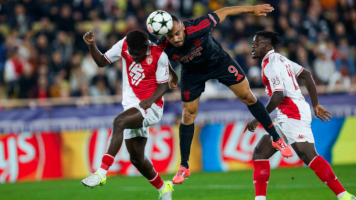
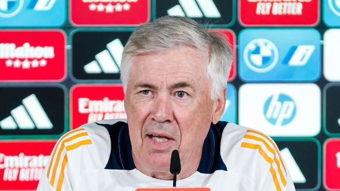

Real Madrid x Man City
O jogo entre Real Madrid e Manchester City pela Liga dos Campeões na última semana foi um confronto eletrizante, como já era esperado entre duas das melhores equipes do mundo. A partida terminou em um empate por 3 a 3 no Santiago Bernabéu, deixando tudo em aberto para o jogo de volta. O Real Madrid começou forte e abriu o placar cedo com um gol contra de Rúben Dias, mas o Manchester City reagiu rapidamente, empatando com um golaço de Bernardo Silva de falta. Depois disso, o jogo foi um verdadeiro espetáculo ofensivo, com ambos os times alternando momentos de domínio. Rodrygo e Valverde marcaram para o Madrid, enquanto Phil Foden e Gvardiol fizeram golaços para o City Com esse empate, a decisão da vaga para as semifinais será no jogo de volta, em Manchester. O City tem a vantagem de jogar em casa, mas o Madrid já mostrou que sabe se impor em momentos decisivos.

Benfica x Monáco
No dia 18 de fevereiro de 2025, o Estádio da Luz em Lisboa foi palco de um emocionante confronto entre o Benfica e o AS Mónaco, válido pela segunda mão dos playoffs da Liga dos Campeões. Após uma vitória por 1-0 no jogo de ida, o Benfica entrou em campo com uma ligeira vantagem, mas o desenrolar da partida revelou-se uma verdadeira montanha-russa de emoções. O marcador foi inaugurado aos 22 minutos pelo extremo turco Kerem Aktürkoğlu, que aproveitou uma assistência precisa de Vangelis Pavlidis para colocar o Benfica em vantagem. No entanto, a resposta do Mónaco não tardou: aos 32 minutos, o japonês Takumi Minamino igualou a partida, capitalizando uma jogada iniciada por Breel Embolo. A segunda parte começou com o Mónaco a assumir a dianteira aos 51 minutos, graças a um remate certeiro de Eliesse Ben Seghir. A eliminatória estava empatada no agregado, aumentando a tensão entre os adeptos. Aos 76 minutos, o Benfica beneficiou de uma grande penalidade, que Pavlidis converteu com frieza, restabelecendo a igualdade no jogo e colocando novamente os encarnados em vantagem na eliminatória. A emoção atingiu o auge quando, aos 81 minutos, o jovem George Ilenikhena, recém-entrado em campo, marcou para o Mónaco, empatando novamente a eliminatória. Contudo, a alegria monegasca foi efémera. Aos 84 minutos, Orkun Kökçü, destacado como o jogador do jogo, selou o empate em 3-3, resultado que garantiu a passagem do Benfica aos oitavos de final com um agregado de 4-3. Kökçü expressou a sua satisfação após o apito final: "Foi um jogo difícil, com muito desgaste físico, mas estou muito feliz por ter contribuído para a nossa qualificação." Com este desfecho, o Benfica aguarda agora o sorteio que determinará o seu adversário na próxima fase da competição, podendo enfrentar equipas como o Liverpool ou o Barcelona. Este resultado reforça a resiliência e determinação da equipa lisboeta em competições europeias, mantendo viva a esperança dos adeptos numa campanha bem-sucedida na Liga dos Campeões.
Polemicas
Nas últimas semanas, a Liga dos Campeões tem sido palco de diversas polêmicas que agitaram o mundo do futebol. Entre as principais controvérsias, destacam-se as provocações nas redes sociais entre clubes rivais, debates sobre o novo formato da competição e discussões acerca da carga excessiva de jogos. Provocações nas redes sociais: Após o sorteio que definiu o confronto entre Real Madrid e Atlético de Madrid nos oitavos de final, o ambiente esquentou. O Atlético utilizou suas redes sociais para lançar provocações ao rival, o que levou a questionamentos durante a coletiva de imprensa do técnico do Real Madrid, Carlo Ancelotti. Demonstrando tranquilidade, Ancelotti minimizou as provocações, afirmando: "Já tenho dificuldade para entender o que é um tweet..." CADENASER.COM Debates sobre o novo formato da Liga dos Campeões: A temporada 2024/25 marcou a introdução de um novo formato na Liga dos Campeões, substituindo a tradicional fase de grupos por uma fase de liga com 36 equipes. Essa mudança gerou críticas de figuras influentes, como Florentino Pérez, presidente do Real Madrid, que classificou o novo modelo como "absurdo" e reforçou a necessidade de uma Superliga Europeia. Pérez argumentou que o novo formato aumenta o número de jogos e diminui o interesse dos torcedores. LIBERAL.COM.BR Discussões sobre a carga excessiva de jogos: A reformulação da Liga dos Campeões resultou em um aumento significativo no número de partidas, passando de 125 para 189 jogos por temporada. Essa intensificação do calendário suscitou preocupações entre jogadores e treinadores sobre o desgaste físico e a qualidade do futebol apresentado. Em resposta, a UEFA está considerando a eliminação dos prolongamentos nas fases eliminatórias, levando os jogos empatados diretamente para a disputa de pênaltis, como forma de reduzir a carga de trabalho dos atletas. DESPORTO.SAPO.PT Essas polêmicas refletem as tensões e desafios enfrentados no futebol europeu atual, onde a busca por inovação e lucro muitas vezes entra em conflito com a tradição e o bem-estar dos jogadores.
